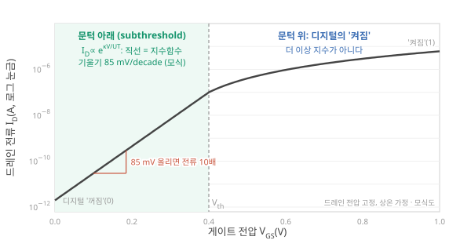

D1. 뉴로모픽 컴퓨팅이란 정확히 무엇이고 기존 컴퓨팅과 무엇이 다른가?
Phase 1 · 왜 뉴로모픽 컴퓨팅인가 · 10월 23일 (금)
답에 들어가야 할 것 — 정의, '뉴로모픽'이라는 이름 아래의 서로 다른 줄기(아날로그 VLSI, 디지털 SNN 칩, in-memory computing, 소재 기반 물리 컴퓨팅)와 각각이 푸는 문제, 내가 어느 줄기에 있는지
① 읽기 전 답
자료를 보기 전에 10분 동안, 지금 아는 만큼만 씁니다. 틀려도 괜찮습니다. 저장한 뒤에는 고치지 않습니다. 공부가 끝난 뒤 이 답과 ④의 차이가 곧 오늘 배운 것입니다.
② 학습자료
오늘의 질문은 크지만, 네 개의 작은 질문으로 나누면 하나씩 답할 수 있습니다. 자료도 이 순서로 갑니다. 앞 절을 이해해야 뒤 절이 읽히니 순서대로 읽으세요.
- 보통 컴퓨터는 어떻게 계산하나? (뉴로모픽이 무엇과 다른지 말하려면 먼저 '무엇'을 알아야 합니다)
- '뉴로모픽'이라는 말은 어디서 왔고 원래 무슨 뜻이었나?
- 지금 그 이름 아래에는 어떤 줄기들이 있고, 각각 무슨 문제를 풀려고 하나?
- 그래서 기존 컴퓨팅과 정확히 무엇이 다르고, 내 연구는 어디쯤에 있나?
0. 먼저, 보통 컴퓨터는 어떻게 계산하나
뉴로모픽 컴퓨팅은 "보통 컴퓨터와 다르게 계산한다"는 주장입니다. 그러니 보통 컴퓨터가 어떻게 계산하는지를 먼저 세 가지만 잡아 두면 뒤가 쉬워집니다.
(1) 모든 것이 0과 1이다. 숫자도, 글자도, 신경망의 가중치도 비트(bit, 0 또는 1)의 묶음으로 저장됩니다. 전압이 높으면 1, 낮으면 0입니다. 중간값은 없습니다. 그래서 잡음이 조금 섞여도 값이 변하지 않고, 같은 계산을 백 번 해도 같은 답이 나옵니다.
(2) 저장하는 곳과 계산하는 곳이 떨어져 있다. 계산은 CPU(또는 GPU)가 하고, 데이터는 메모리(DRAM)에 있습니다. 더하기 하나를 하려면 메모리에서 숫자를 꺼내 CPU로 가져오고, 계산하고, 결과를 다시 메모리에 넣습니다. 이 구조를 von Neumann 구조라고 부릅니다. 폴더의 Liang 리뷰는 이 구조의 한계를 "메모리와 연산 장치가 물리적으로 분리되어 있다"는 한 문장으로 정의합니다. Liang 2024, p.193

(3) 시계(클록)에 맞춰 한 걸음씩 간다. 클록이 한 번 똑딱일 때마다 모든 회로가 한 걸음 움직입니다. 요즘 CPU는 1초에 수십억 번(GHz) 똑딱입니다. 계산에 시간이 걸리는 건 걸음 수가 많아서이지, 물리적 시간 자체가 계산에 들어가는 건 아닙니다. 클록을 두 배 빠르게 돌려도 답은 같습니다.

- von Neumann 구조
- 1945년 John von Neumann이 정리한 컴퓨터 구조. 프로그램과 데이터를 같은 메모리에 두고, 별도의 연산 장치가 그것을 꺼내 처리한다. 오늘날 거의 모든 컴퓨터가 이 구조다. 미확인
- GPU
- 그래픽 처리 장치. 수천 개의 작은 계산 코어가 같은 연산을 동시에 한다. 딥러닝 학습의 주력이지만, 메모리와 연산이 떨어져 있고 모든 값이 비트라는 점은 CPU와 같다.
- 행렬–벡터 곱 (MVM)
- 신경망 계산의 뼈대. 입력 벡터 \(\mathbf{u}\)에 가중치 행렬 \(W\)를 곱해 출력 \(\mathbf{y} = W\mathbf{u}\)를 얻는다. 곱셈과 덧셈만 있지만 수가 엄청나게 많다. 뒤에서 여러 번 나온다.
더하기 한 번에 "메모리에서 꺼내기 → 계산 → 메모리에 넣기"가 필요하다면, 신경망처럼 곱셈과 덧셈을 수백만 번 하는 계산에서 시간과 에너지는 주로 어디에 쓰일까요? 계산 자체일까요, 옮기는 일일까요? (답은 D2에서 숫자로 확인합니다. 오늘은 감만 잡으세요.)
Dennard scaling과 왜 클록이 더 안 빨라지는가
2000년대 중반까지는 트랜지스터를 작게 만들면 전력 밀도가 그대로인 채 더 빨라졌습니다(Dennard scaling). 그 뒤로는 작게 만들어도 누설 전류 때문에 전력이 줄지 않아, 클록을 더 올리면 칩이 과열됩니다. 그래서 CPU 클록은 10년 넘게 3–5 GHz 근처에 머물고, 대신 코어 수를 늘렸습니다. 이것이 "다른 방식으로 계산하자"는 요구가 커진 배경 중 하나입니다. D2에서 다룹니다. 미확인- 보통 컴퓨터: 모든 값은 비트, 저장(메모리)과 계산(CPU)은 떨어져 있고, 클록에 맞춰 한 걸음씩 간다.
- 그래서 더하기 한 번에도 숫자가 버스를 왕복한다. 이 왕복이 von Neumann 병목이다 Liang 2024, p.193.
- 디지털에서 시간은 그릇일 뿐이다. 클록을 빨리 돌려도 결과는 같다. 이 점을 3절에서 뒤집는다.
1. 이름의 기원: 소자의 물리로 계산하자
'neuromorphic'이라는 말은 1980년대 말 Caltech의 Carver Mead가 만들었습니다. 대표 문헌은 1990년 Proc. IEEE의 "Neuromorphic electronic systems"입니다. 미확인 폴더의 Roadmap 리뷰는 이 시기를 '뉴로모픽 공학기(약 1990–2010)'로 묶고, Mead의 방법을 문턱전압 아래(subthreshold)에서 동작하는 아날로그 VLSI 회로로 신경 정보처리를 흉내 낸 것으로 정리합니다. Roadmap 2026, Fig. 2, p.8104–8106
이 한 문장에 처음 보는 말이 셋 있습니다. 하나씩 풀겠습니다.
1-1. 트랜지스터와 문턱전압
직관. 트랜지스터는 수도꼭지입니다. 게이트(gate)에 거는 전압이 손잡이이고, 소스(source)에서 드레인(drain)으로 흐르는 전류가 물입니다. 손잡이를 어느 정도 이상 돌려야 물이 "제대로" 나오는데, 그 기준 전압이 문턱전압 \(V_{th}\)입니다.
변수와 단위. 게이트 전압 \(V_{GS}\) [V], 드레인 전류 \(I_D\) [A], 문턱전압 \(V_{th}\) [V]. 디지털 회로는 \(V_{GS}\)를 \(V_{th}\)보다 충분히 높게(켜짐, 1) 또는 0에 가깝게(꺼짐, 0) 두고, 그 중간은 쓰지 않습니다.
작은 예시. \(V_{th} = 0.4\) V인 트랜지스터에 1 V를 걸면 켜지고, 0 V를 걸면 꺼집니다. 디지털 회로는 이 두 상태만 씁니다.
적용 조건. 그런데 "꺼짐"이라고 전류가 정확히 0은 아닙니다. \(V_{GS}\)가 \(V_{th}\)보다 낮을 때도 아주 작은 전류가 흐릅니다. 이 영역을 subthreshold(문턱 아래) 영역이라고 합니다. 디지털 설계자에게는 없애고 싶은 누설이지만, Mead는 여기서 계산을 했습니다.

1-2. 문턱 아래에서 전류는 왜 지수함수인가
직관. 문턱 아래에서는 전자가 에너지 장벽을 "넘어가야" 흐릅니다. 장벽을 넘을 확률은 온도와 장벽 높이에 지수적으로 달려 있습니다. 게이트 전압이 장벽 높이를 낮추므로, 전류는 게이트 전압에 지수적으로 커집니다.
변수와 단위.
\[ I_D \approx I_0 \, e^{\kappa V_{GS}/U_T} \]
- \(I_0\) [A]: 소자마다 정해지는 기준 전류
- \(U_T = kT/q\) [V]: 열전압. 볼츠만 상수 \(k\), 절대온도 \(T\), 전자 전하 \(q\). 300 K에서 약 25.8 mV
- \(\kappa\) (무차원, 1보다 작음): 게이트 전압 중 실제로 장벽을 낮추는 데 쓰이는 비율. 보통 0.6–0.9 미확인
작은 예시. \(\kappa = 0.7\)이면 \(V_{GS}\)를 \(U_T/\kappa \approx 37\) mV 올릴 때마다 전류가 \(e \approx 2.7\)배가 됩니다. 85 mV 올리면 10배입니다. 전압이 조금만 변해도 전류는 자릿수가 바뀝니다.
적용 조건. \(V_{GS} < V_{th}\)일 때만 성립합니다. 문턱을 넘으면 전류는 지수가 아니라 대략 제곱(포화 영역) 또는 선형으로 바뀝니다. 또 소자마다 \(I_0\)와 \(\kappa\)가 조금씩 달라서, 같은 전압에서 전류가 소자마다 수십 %씩 다를 수 있습니다. 이 편차가 뒤에 나올 아날로그 회로의 약점입니다. 해석
1-3. 왜 이것이 '뇌를 닮았다'고 했나
신경세포의 막에는 이온 채널이 있고, 채널이 열릴 확률도 막전위에 대해 볼츠만 꼴로 지수 의존합니다. 두 식이 닮은 이유는 우연이 아닙니다. 둘 다 입자(전자 또는 이온)가 에너지 장벽을 넘을 확률이 볼츠만 분포 \(\propto e^{-E/kT}\)를 따른다는 같은 물리에서 나옵니다. 해석

여기서 Mead의 핵심 아이디어가 나옵니다. 디지털 회로로 지수함수를 계산하려면 수많은 트랜지스터와 클록 주기가 필요합니다. 그런데 subthreshold 트랜지스터는 지수함수 계산을 위한 추가 회로 없이, 소자의 물리가 이미 지수함수를 만들어 줍니다. 전압을 넣으면 그 지수가 전류로 나옵니다.
그래서 Mead의 원래 아이디어는 "뇌를 닮자"보다 "소자의 물리가 이미 하고 있는 계산을 그대로 쓰자"에 가깝습니다. 해석 실제로 그렇게 만든 silicon retina(망막 회로)와 silicon cochlea(달팽이관 회로)는 같은 일을 하는 디지털 구현보다 대개 두 자릿수 이상 효율적이었다고 Roadmap은 정리합니다. Roadmap 2026, p.8105
"뉴로모픽 = 뇌를 흉내 낸 것" — 이름은 그렇게 들리지만, 출발점은 흉내가 아니라 계산 비용이었습니다. 뇌와 닮은 수식이 소자에 공짜로 들어 있으니 그걸 쓰자는 것이었습니다. 이 구분이 중요한 이유는 D6에서 다룹니다. 시냅스 현상을 소자에서 "재현"하는 것과, 소자의 물리로 "계산"하는 것은 다른 일입니다.
이 이야기가 이온 소자 연구자에게 중요한 이유가 있습니다. 이온 소자로 reservoir computing을 하겠다는 것, 즉 "재료의 동역학을 계산에 쓰자"는 생각은 Mead의 원래 아이디어의 직계 후손입니다. 반대로 이온 소자로 시냅스 현상을 흉내 내는 것만으로는 이 원래 아이디어와 거리가 있습니다. 해석
내가 다뤄 본 ionic diode나 polyelectrolyte heterojunction의 전류–전압 곡선에도 지수적인 부분이 있나요? 있다면 그 기원은 무엇일까요? 볼츠만 분포(장벽 넘기)인가요, 아니면 다른 것(농도 분극, depletion층의 두께 변화)인가요? 모르면 '아직 모르는 것'에 적어 두세요. D20에서 다시 만납니다.
Mead의 아날로그 VLSI가 왜 주류가 되지 못했나
세 가지 벽이 있었습니다. (1) 소자 편차: 1-2에서 본 \(I_0\), \(\kappa\)의 편차 때문에 같은 회로를 두 개 만들면 다르게 동작합니다. (2) 프로그래밍: 디지털은 소프트웨어를 바꾸면 되지만, 아날로그 회로는 기능을 바꾸려면 회로를 바꿔야 합니다. (3) 디지털의 무서운 발전: 1990–2005년 사이 디지털 칩은 Dennard scaling 덕에 2년마다 두 배 빨라졌고, 아날로그의 효율 이점을 숫자로 압도했습니다. 그 발전이 멈춘 지금(2010년대 이후) 아날로그가 다시 주목받는 이유이기도 합니다. 미확인 해석- 'neuromorphic'은 Mead(1990)가 만든 말 미확인. 문턱 아래 트랜지스터의 지수 전류를 계산에 썼다 Roadmap 2026, p.8104–8106.
- 문턱 아래에서 전류 ∝ e^(κV/U_T). 85 mV마다 10배. 신경세포 이온 채널과 같은 볼츠만 물리다.
- 출발점은 '닮음'이 아니라 '지수함수를 추가 회로 없이 얻는 계산 비용'이었다 해석. 모사와 계산의 구분은 D6.
2. 이름이 커지다: 우산 아래의 줄기들
지금의 '뉴로모픽'은 하나의 기술이 아니라 여러 기술을 덮는 우산 이름입니다. 폴더의 리뷰들도 정의를 조금씩 다르게 씁니다.
- Liang 리뷰는 뉴로모픽 컴퓨팅을 뇌의 작동 방식을 흉내 내는 계산으로 정의하고, 뇌는 복잡한 순환 동역학을 가진 아날로그 계산을 한다고 씁니다. Liang 2024, p.193
- Roadmap은 상위 개념으로 bioinspired computing을 두고, 그 핵심 원리를 sparsity(드문드문 활동), parallelism(병렬), analog dynamics(아날로그 동역학), event-driven(사건 구동)으로 듭니다. 뉴로모픽은 그 안의 한 영역입니다. Roadmap 2026, p.8103
- Roadmap은 정의를 하나로 좁히지 말라고 명시하고, 두 궤적을 구분합니다. 응용이 필요로 하는 만큼만 뇌에서 영감을 가져오는 쪽과, 생물학적 충실도를 높이려는 쪽입니다. Roadmap 2026, p.8136–8137
정의가 하나로 모이지 않는 이유는, 각 줄기가 서로 다른 문제를 풀려고 뇌에서 서로 다른 원리를 빌려 왔기 때문입니다. 해석 그러니 정의를 외우기보다 줄기마다 "무엇이 문제였고, 무엇을 바꿨나"를 묻는 편이 낫습니다.
아래 (가)–(라)는 Claude가 폴더의 리뷰들을 바탕으로 정리한 분류이지, 분야에서 합의된 공식 분류가 아닙니다. 실제 시스템은 여러 줄기를 섞습니다. 예를 들어 Liang 리뷰의 RC 시스템 예시는 (라)의 reservoir와 (다)의 crossbar를 한 시스템에 넣습니다. Liang 2024, p.198, Fig. 4d Roadmap의 칩 분류(완전 디지털 / 아날로그·혼합신호 / 멤리스터 CIM / 광자 / 엣지)와도 경계가 조금 다릅니다. Roadmap 2026, p.8134–8135 분류는 지도이지 영토가 아닙니다.


(가) 아날로그 VLSI: 동역학을 회로의 물리로 재현한다
- 문제: 신경세포의 동역학(입력을 쌓고, 새고, 문턱을 넘으면 발화하고, 적응하는 것)을 디지털로 계산하면 비싸다.
- 바꾼 것: 1절에서 본 방식. 아날로그 회로의 물리로 동역학을 실시간으로 직접 재현한다.
- 사례: Mead의 silicon retina와 cochlea. 그 후손인 Neurogrid, BrainScaleS-2 같은 혼합신호(mixed-signal) 칩. 계산은 아날로그 회로가 하고, 제어는 디지털이 맡는 구조입니다. Roadmap 2026, p.8134–8135
- 벽: 소자 편차와 잡음, 프로그래밍의 어려움. 해석
(나) 디지털 SNN 칩: 소자는 그대로, 구조만 뇌처럼
- 문제: 큰 신경망을 적은 에너지로 돌리고 싶다.
- 바꾼 것: 소자는 평범한 디지털 CMOS 트랜지스터 그대로 둡니다. 대신 구조를 바꿉니다. 중앙 제어기와 공유 메모리 대신, 각자 로컬 메모리를 가진 수많은 코어가 스파이크라는 사건이 올 때만 일합니다. Roadmap은 이 원칙을 distributed, parallel, sparse, event-driven 네 단어로 요약합니다. Roadmap 2026, p.8126
- 사례: IBM TrueNorth(뉴런 100만 개, 시냅스 2억 5600만 개, 64×64 코어) Roadmap 2026, p.8134–8135, 칩 위에서 STDP 학습이 가능한 Intel Loihi Roadmap 2026, p.8134, ARM 코어를 100만 개 가까이 묶은 맨체스터의 SpiNNaker. 미확인 TrueNorth가 실시간 동작에 수십 mW를 쓴다는 수치는 널리 인용되지만, 폴더 리뷰에는 참고문헌 제목에만 있고 본문 수치로는 없습니다. 미확인
- 벽: 소자 자체는 새 물리가 아니라 기존 트랜지스터입니다. 그리고 스파이크 신경망을 학습시키는 알고리즘이 일반 딥러닝만큼 성숙하지 않았습니다. 해석
- 스파이크 (spike)
- 신경세포가 내는 짧은 전압 펄스(약 1 ms, 약 100 mV). 신경세포는 값을 연속적으로 보내는 대신 "지금 사건이 있다"는 펄스를 띄엄띄엄 보낸다. 펄스가 없을 때는 거의 에너지를 쓰지 않는다. 이것이 event-driven의 뜻이다.
- SNN (spiking neural network)
- 스파이크로 신호를 주고받는 신경망. 일반 딥러닝(ANN)은 실수값을 주고받는다.
- STDP
- spike-timing-dependent plasticity. 앞 뉴런이 뒤 뉴런보다 조금 먼저 발화하면 연결이 강해지고, 늦게 발화하면 약해지는 학습 규칙. 생물에서 관찰된 규칙이고, 소자 논문에서 자주 재현한다.
- CMOS
- 오늘날 거의 모든 디지털 칩을 만드는 트랜지스터 공정. "CMOS와 호환된다"는 말은 기존 반도체 공장에서 함께 만들 수 있다는 뜻이다.
(다) In-memory computing: 데이터를 옮기지 않는다
- 문제: 0절의 (2). 메모리와 연산 장치가 떨어져 있어서, 신경망 계산의 대부분인 행렬–벡터 곱을 할 때마다 가중치를 메모리에서 꺼내 와야 합니다.
- 바꾼 것: 가중치를 저장한 메모리 배열 안에서 곱셈과 덧셈을 한 번에 합니다. 어떻게 그게 되는지가 이 줄기의 핵심이니 네 단계로 풀겠습니다.
직관. 가로줄과 세로줄이 격자로 교차하고, 교차점마다 저항이 하나씩 있는 판을 상상하세요. 이것이 crossbar입니다. 세로줄에 전압을 걸면 각 교차점의 저항을 통해 전류가 흐르고, 가로줄에서 그 전류들이 합쳐져 나옵니다. 전압이 입력, 저항(의 역수)이 가중치, 합쳐진 전류가 출력입니다. 곱셈은 Ohm의 법칙이, 덧셈은 Kirchhoff의 전류 법칙이 해 줍니다. Jiang 2026, p.1111, Fig. 1
변수와 단위.
\[ I_j = \sum_i G_{ij}\, V_i \]
- \(V_i\) [V]: \(i\)번째 세로줄에 건 입력 전압
- \(G_{ij}\) [S, 지멘스 = 1/Ω]: \(i\)번째 세로줄과 \(j\)번째 가로줄 교차점에 있는 소자의 전도도(저항의 역수). 이것이 가중치
- \(I_j\) [A]: \(j\)번째 가로줄로 모이는 전류. 이것이 출력
작은 예시. 세로줄 2개, 가로줄 1개. \(G_1 = 1\) µS, \(G_2 = 3\) µS에 \(V_1 = 0.1\) V, \(V_2 = 0.2\) V를 걸면 \(I = 1\times0.1 + 3\times0.2 = 0.7\) µA. 곱셈 두 번과 덧셈 한 번이 전류가 흐르는 순간 끝납니다. 가로줄이 1000개면 곱셈·덧셈 수천 번이 같은 순간에 끝납니다.
적용 조건. (1) 소자의 전류가 전압에 비례해야 합니다(Ohm의 법칙이 성립해야). 비선형이면 곱셈이 틀어집니다. (2) 가중치 \(G_{ij}\)를 원하는 값으로 쓰고, 오래 유지할 수 있어야 합니다. (3) 출력 전류 \(I_j\)는 아날로그 값이라, 다음 단계로 넘기려면 디지털로 바꿔야 합니다(ADC). 이 변환이 비쌉니다. Roadmap은 큰 시스템에서는 주변회로가 전력 소모의 주원인이 된다고 씁니다. Roadmap 2026, p.8119 (4) 소자 값의 오차를 보정하는 데 드는 비용이 in-memory의 이득을 깎아 먹습니다. Jiang 2026

- 사례: PCM(상변화 메모리), RRAM(저항 변화 메모리), ECRAM(전기화학 RAM), 그리고 이온 시냅스 소자로 만든 crossbar.
- 중요한 점: 스파이크가 없어도 됩니다. 주 목적은 일반 딥러닝 추론을 빠르고 싸게 하는 것이고, 뇌에서 빌려 온 원리는 사실상 저장과 계산을 같은 곳에 둔다(co-location) 하나입니다. 해석
- memristor (멤리스터)
- 흐른 전하나 걸린 전압의 이력에 따라 저항이 바뀌고, 그 값이 유지되는 2단자 소자. 저항이 곧 기억이다. PCM, RRAM이 대표적이고, 이온 소자도 이 틀로 설명될 때가 많다.
- ADC
- analog-to-digital converter. 아날로그 전류·전압을 디지털 숫자로 바꾸는 회로. 정밀할수록 크고 느리고 전력을 많이 쓴다. D17의 주인공이다.
- 전도도 (conductance) \(G\)
- 저항 \(R\)의 역수, \(G = 1/R\). 단위 S(지멘스). 전압 1 V에 1 A가 흐르면 1 S. 소자 논문의 "전도도 상태 수"는 가중치로 쓸 수 있는 서로 다른 \(G\) 값의 개수다.
(라) 물리 컴퓨팅: 재료의 동역학을 계산 자원으로 쓴다
- 문제: 시간에 따라 변하는 신호(시계열)를 디지털로 처리하려면 과거 입력을 계속 저장하고 갱신해야 합니다. 음성, 센서 신호, 생체 신호가 다 이렇습니다.
- 바꾼 것: 재료가 원래 가진 동역학을 그대로 계산 자원으로 씁니다. 재료에 신호를 넣으면 재료의 상태가 입력에 비선형으로 반응하고, 지나간 입력을 잠시 기억했다가 서서히 잊습니다(fading memory). 이 두 성질이 있으면 재료의 현재 상태만 읽어도 "최근에 어떤 입력이 들어왔는지"를 간단한 선형 계산으로 알아낼 수 있습니다. 이것이 physical reservoir computing(PRC)이고, Phase 2 전체가 이 원리를 다룹니다. 오늘은 "재료가 기억하고 비선형으로 반응하면 그 자체가 계산"이라는 감만 잡으면 됩니다.
- Liang 리뷰는 PRC를 재료의 동적 성질을 수확하는 뉴로모픽 계산의 한 형태로 정의하고 Liang 2024, 초록, SNN이나 일반 신경망과 달리 계산의 대부분을 물리 영역에서 한다는 점을 차이로 듭니다. Liang 2024, p.194 물리 노드가 갖춰야 할 두 기본 성질은 nonlinearity와 dynamics입니다. Liang 2024, Fig. 3a
- 사례: 휘발성 memristor, 나노와이어망, 이온 트랜지스터. Liang은 전자식 PRC를 delay-coupled, dynamic devices, in materia, rotating neurons의 네 아키텍처로 나눕니다. Liang 2024, Fig. 2 센서 바로 옆이나 안에서 계산하는 in-sensor computing이 이 줄기의 대표 응용입니다.
- 발전 방향: 완전 디지털 RC에서 출발해 물리 reservoir와 디지털 출력층을 섞는 단계를 거쳐, 2020년 무렵부터는 출력층까지 아날로그로 만드는 시도가 나왔습니다. Liang 2024, p.201, Fig. 5
- 벽: Liang 리뷰는 이 줄기에 냉정합니다. 물리 노드를 새로 찾는 일 자체는 어렵지 않다고 쓰고, 디지털 RC보다 자원을 더 쓰는 PRC는 의미가 없다고 못 박습니다. Liang 2024, p.202 같은 구성이면 대개 소프트웨어 RC가 더 정확하며, 하드웨어의 장점은 정확도가 아니라 전력과 회로 복잡도라고 봅니다. Liang 2024, p.201


- 시계열 (time series)
- 시간 순서로 들어오는 값의 나열. 음성 파형, 센서 값, 심전도. "지금 값"만으로는 부족하고 "방금 전까지 어땠는지"가 있어야 처리할 수 있는 신호다.
- fading memory
- 지나간 입력의 영향이 시간이 갈수록 줄어드는 성질. 1초 전 입력은 많이, 10초 전 입력은 조금 남아 있다. 전혀 안 잊으면(영구 기억) 오래된 입력이 쌓여 현재를 못 읽고, 즉시 잊으면 시계열을 처리할 수 없다. D9의 주제.
- readout (출력층)
- reservoir의 상태를 읽어 원하는 답으로 바꾸는 마지막 계산. 보통 단순한 선형 회귀이고, 이것만 학습한다. D8의 주제.
- in-sensor computing
- 센서가 신호를 디지털로 바꿔 컴퓨터로 보내기 전에, 센서 자체(또는 바로 옆)에서 처리를 끝내는 방식. 보낼 데이터가 줄어 에너지가 준다.
(마) 회색지대: 소자 수준의 생체 모사
폴더의 이온 소자 논문 상당수는 위 네 줄기 어디에도 딱 들어가지 않습니다. PPF, STP/LTP, STDP 같은 시냅스 현상을 소자 하나에서 재현했다는 논문들입니다. 이것은 '계산'이라기보다 계산 시스템의 부품 후보입니다. 해석 Aluru 리뷰는 이런 'synaptomimetic' 보고가 폭발적으로 늘었지만, 목표에 닿으려면 단순한 전도도 이력(hysteresis)을 넘어서는 훨씬 정교한 기능이 필요하다고 지적합니다. Aluru 2026, p.592–593
- PPF (paired-pulse facilitation)
- 펄스 두 개를 짧은 간격으로 주면 두 번째 응답이 첫 번째보다 커지는 현상. 간격이 짧을수록 더 커진다. 소자에 짧은 기억이 있다는 가장 간단한 증거라서 거의 모든 시냅스 소자 논문의 첫 그림이다.
- STP / LTP
- short-term / long-term potentiation. 자극 뒤 응답이 커진 상태가 짧게(초 이하) 또는 오래(분 이상) 유지되는 것. 소자에서는 보통 휘발성/비휘발성 전도도 변화로 대응시킨다.
| 줄기 | 무엇이 문제였나 | 무엇을 바꿨나 | 계산의 주체 | 대표 사례 |
|---|---|---|---|---|
| (가) 아날로그 VLSI | 신경 동역학을 디지털로 흉내 내는 비용 | 회로의 물리로 직접 재현 | 아날로그 회로 | silicon retina, BrainScaleS-2 |
| (나) 디지털 SNN | 큰 신경망의 에너지 | 사건 구동 + 코어별 로컬 메모리 | 디지털 회로 | TrueNorth, Loihi |
| (다) In-memory | 메모리↔︎연산 데이터 이동 | 메모리 배열 안에서 MVM | 소자의 전도도 | PCM·RRAM crossbar |
| (라) 물리 컴퓨팅 | 시계열 처리 비용 | 재료 동역학을 계산 자원으로 | 재료의 동역학 | 휘발성 memristor, 이온 소자 |
| (마) 소자 수준 모사 | (계산 문제라기보다 현상 재현) | 시냅스·뉴런 현상을 소자에서 재현 | 아직 없음 | 대부분의 이온 시냅스 논문 |
"뉴로모픽 = 스파이킹 신경망(SNN)" — 아닙니다. (다)는 스파이크 없이 일반 딥러닝을 가속하고, (라)도 스파이크가 필요 없습니다. 스파이크는 (나)와 일부 (가)의 특징일 뿐입니다.
다섯 줄기 중 '뇌를 닮았다'는 말이 가장 약하게 들어맞는 줄기는 어디인가요? 그런데도 왜 그것을 뉴로모픽이라고 부를까요? 이름이 무엇을 숨기고 있는지 한 줄로 적어 보세요.
- (가) 아날로그 VLSI: 회로의 물리로 신경 동역학 재현 / (나) 디지털 SNN: 소자는 그대로, 구조를 사건 구동·로컬 메모리로 / (다) in-memory: 메모리 배열 안에서 행렬 곱 / (라) 물리 컴퓨팅: 재료 동역학을 계산 자원으로.
- 분류는 이해용이고 서로 겹친다. Liang 2024의 RC 시스템 예시는 (라)+(다)다.
- crossbar: 곱셈은 Ohm, 덧셈은 Kirchhoff. 대신 ADC 등 주변회로가 비싸고 Roadmap 2026, p.8119, 소자 오차가 답에 섞인다.
- (라)의 핵심 성질은 nonlinearity와 dynamics(fading memory) Liang 2024, Fig. 3a. 디지털 RC보다 자원을 더 쓰면 의미가 없다 Liang 2024, p.202.
- (마) 시냅스 현상 재현은 아직 계산이 아니라 부품 후보다 Aluru 2026, p.592–593.
3. 기존 컴퓨팅과 무엇이 다른가: 다섯 개의 축
"뉴로모픽은 뇌처럼 계산한다"는 답은 아무것도 설명하지 않습니다. 0절의 보통 컴퓨터와의 차이를 축으로 나눠야 구체적인 답이 됩니다. 해석
| 축 | 기존 디지털 컴퓨팅 (0절) | 뉴로모픽 쪽 | 이 축을 바꾸는 줄기 |
|---|---|---|---|
| ① 저장과 계산의 위치 | 떨어져 있고 버스로 오간다 | 같은 곳에 있다(co-location) | (나), (다), (라) |
| ② 정보의 표현 | 클록마다 갱신되는 비트 | 스파이크(사건) 또는 연속적인 아날로그 양(전도도, 전하, 이온 농도) | (가), (나), (다), (라) |
| ③ 시간의 역할 | 계산을 담는 그릇일 뿐. 빨리 돌려도 결과는 같다 | 물리적 시간 자체가 계산의 일부. 소자의 시간상수가 곧 기억 | (가), (라) |
| ④ 정밀도 | 정확하고 재현된다 | 근사적이고, 잡음과 소자 편차를 감수한다 | (가), (다), (라) |
| ⑤ 계산을 정하는 것 | 프로그램 | 회로·소자의 물리와 학습된 가중치 | 모두, 정도 차이 |

몇 가지는 짚어 둘 만합니다.
- 병렬이라고 뉴로모픽은 아닙니다. GPU는 수천 개의 코어로 병렬 계산을 하지만, 메모리와 연산 코어가 떨어져 있고 모든 값을 비트로 클록마다 갱신합니다. 축 ①–⑤ 중 어느 것도 바꾸지 않았습니다. 해석
- 축 ③은 이온 소자 연구자에게 가장 중요한 축입니다. 디지털 컴퓨터에서 시간은 계산과 무관하지만, (라)에서는 소자가 입력을 얼마나 오래 기억하느냐(시간상수)가 곧 계산 능력입니다. 이온의 느린 움직임이 단점이 아니라 자원이 될 수 있는 유일한 축이 여기입니다. 해석 Liang은 센서 근처에서 생물학적 신호를 처리하려면 1 ms보다 긴 시간척도가 필요하다고 씁니다. Liang 2024, p.198
- 축 ④는 공짜가 아닙니다. 정밀도를 포기하는 대가로 에너지를 얻는 것이므로, 그 과제가 근사를 견디는지 먼저 물어야 합니다. 해석
- 시간상수 (time constant) \(\tau\)
- 어떤 양이 변한 뒤 원래로 돌아가는 데 걸리는 시간의 척도. 단위 s. 값이 \(e^{-t/\tau}\)로 줄어들 때, \(t = \tau\)에서 처음의 약 37%가 남는다. 소자 논문의 "retention"이나 "decay time"이 이것이다. 예: 커패시터 \(C\)와 저항 \(R\)이 있으면 \(\tau = RC\). 1 µF와 1 kΩ이면 1 ms.
에너지로 보면
에너지 측면에서 이 축들이 왜 중요한지는 Aluru 리뷰의 비교 한 줄로 감을 잡을 수 있습니다. 뇌는 수십 Hz, 약 100 mV로 동작하고 디지털 회로는 GHz, 1 V 이상으로 동작합니다. Aluru 2026, p.592
직관. 회로에서 전압을 올렸다 내리는 일은 커패시터를 충전했다 방전하는 일이고, 그때마다 에너지가 열로 빠집니다. 빨리, 높은 전압으로 할수록 많이 빠집니다.
변수와 단위. 스위칭 전력은 대략
\[ P \sim f\, C\, V^2 \]
- \(f\) [Hz]: 1초에 몇 번 충방전하나 (클록)
- \(C\) [F]: 충전해야 하는 정전용량
- \(V\) [V]: 전압
작은 예시. 전압을 1 V에서 0.1 V로 낮추면 \(V^2\)이 100분의 1, 주파수를 1 GHz에서 100 Hz로 낮추면 \(f\)가 천만분의 1. 둘을 곱하면 자릿수로 9가 줄어듭니다. 뇌가 느리고 낮은 전압으로 동작하는 것이 왜 유리한지가 이 식에 들어 있습니다. Aluru 2026, p.592
적용 조건. 이 식은 충방전 에너지만 셉니다. 누설 전류, 아날로그 바이어스 전류, 데이터 이동 에너지는 따로입니다. 그리고 느린 만큼 일을 덜 하므로, 같은 일을 하려면 뇌는 엄청난 병렬성으로 속도를 메웁니다. 해석

- 생물: 스파이크로 1 bit를 부호화·전송하는 데 약 1–100 pJ, 화학 시냅스에 저장하는 데 약 2–6 fJ. Aluru 2026, p.592 Roadmap은 생물 뉴런을 스파이크당 수십 pJ로 적습니다. Roadmap 2026, p.8119 하나는 bit당, 하나는 spike당이라 같은 양이 아닙니다.
- 실리콘: 45 nm CMOS 뉴런 회로는 스파이크당 6.7 fJ, RRAM 기반 SNN 칩은 스파이크당 3.6 pJ. Roadmap 2026, p.8119, 8135
- 뇌 전체는 약 20 W. 미확인 널리 쓰이는 수치지만 폴더의 원문에서는 확인하지 못했습니다. Zhu 리뷰는 이를 '20 W의 효율'이라고 적는데, W는 효율이 아니라 전력의 단위입니다. Zhu 2025
- 단위 감각: 1 pJ = 1000 fJ. AA 건전지 하나(약 10 kJ)로 1 pJ짜리 일을 \(10^{16}\)번 할 수 있습니다.
위 숫자에서 이상한 점이 보이나요? 실리콘 뉴런 회로 하나가 생물 뉴런의 스파이크 하나보다 이미 수천 배 적은 에너지를 씁니다. 그런데도 "뇌가 효율적"이라고 말한다면, 그 효율은 소자 하나가 아니라 다른 곳(연결 구조, 데이터 이동, 필요한 만큼만 계산하는 방식)에서 와야 합니다. 해석 이것이 D2와 D3의 질문입니다.
"뉴로모픽은 기존 컴퓨터보다 무조건 효율적이다" — 조건부입니다. 같은 구성이면 소프트웨어 RC가 대개 더 정확하고 Liang 2024, p.201, 큰 시스템에서는 주변회로가 전력을 지배하며 Roadmap 2026, p.8119, 분류 정확도를 어떻게 평가할지에 대한 합의도 아직 없습니다. Roadmap 2026, p.8136 효율은 '어떤 과제에서, 시스템 전체로' 따져야 하는 양입니다.
다섯 축 중 하나만 바꿔도 '뉴로모픽'이라고 부를 수 있을까요? 최소 몇 개를 바꿔야 할까요? 그리고 내가 만드는 이온 소자는 어느 축을 바꾸나요?
- 다섯 축: ① 저장·계산 위치 ② 정보 표현 ③ 시간의 역할 ④ 정밀도 ⑤ 계산을 정하는 것. 병렬(GPU)만으로는 어느 축도 바뀌지 않는다.
- 이온 소자에게 가장 중요한 축은 ③. 시간상수가 곧 기억이 되는 줄기는 (라)뿐이다 해석.
- P ∼ f·C·V²: 뇌처럼 낮은 전압·낮은 주파수면 10⁻⁹배. 대신 느리다 Aluru 2026, p.592.
- 실리콘 뉴런 회로(6.7 fJ/spike)는 생물 뉴런(수십 pJ/spike)보다 이미 싸다 Roadmap 2026, p.8119. 뇌의 효율은 소자가 아니라 다른 곳에서 온다 → D2·D3.
4. 같은 현상, 정반대의 역할: 휘발성과 비휘발성
이온 소자 연구자가 오늘 꼭 가져가야 할 대목입니다. 같은 '이온의 재배치'라는 현상이 줄기에 따라 정반대의 역할을 합니다.
직관. 이온 소자에 전압을 걸면 이온이 움직여 전도도가 바뀝니다. 전압을 끄면 이온이 제자리로 돌아오면서(이완, relaxation) 전도도도 돌아옵니다. 돌아오는 데 걸리는 시간이 시간상수 \(\tau\)입니다. 이 \(\tau\)가 길면 '기억'이고, 짧으면 '잊음'입니다.
- (다) in-memory의 가중치로 쓸 때: 소자는 학습된 값을 충분히 오래, 정확하게 들고 있어야 합니다. 많은 전도도 상태, 선형적이고 대칭적인 갱신, 긴 retention, 높은 내구성이 필요합니다. 여기서 이온의 이완은 지워야 할 오차입니다. CIM 리뷰는 프로그래밍 뒤의 이완이 오차의 주원인이 될 수 있다고 봅니다. Jiang 2026
- (라) 물리 컴퓨팅의 노드로 쓸 때: 소자는 최근 입력을 기억하되 적당한 속도로 잊어야 하고(fading memory), 입력에 비선형적으로 반응해야 합니다. 여기서 이온의 이완은 계산 자원입니다.

Chem. Soc. Rev. 리뷰도 같은 이분법을 씁니다. 휘발성 시냅스는 동적 전처리에, 다준위와 retention을 갖춘 비휘발성 시냅스는 in-memory 계산(ANN·SNN 하드웨어)에 쓴다고 나눕니다. Wang 2025, 4.2.4절, p.324 Liang 리뷰가 보여 주는 eRC 시스템 예시에서는 두 역할이 한 시스템 안에서 만납니다. 앞단 reservoir층은 휘발성 소자이고, 뒷단 출력층은 비휘발성 memristor crossbar로 구현되어 있습니다. Liang 2024, p.198, Fig. 4d 이것은 그 리뷰가 든 구현 사례이지 보편적 필수조건은 아닙니다. 출력층은 디지털 회로로 만들 수도 있고, 실제로 많은 PRC 논문이 readout을 컴퓨터에서 계산합니다. Liang 2024, p.201, Fig. 5 해석
| 요구 사양 | (다) 비휘발 가중치 | (라) 휘발성 RC 노드 |
|---|---|---|
| 상태 유지 (\(\tau\)) | 학습된 값이 쓰이는 기간 동안 충분히 길어야 한다. 얼마나 길어야 하는지는 응용에 따라 다르다(추론 전용 칩은 년, 재학습이 잦으면 더 짧아도 됨) 해석 | 과제의 시간척도에 맞아야 한다. 길다고 좋은 것이 아니다 (D13) |
| 응답 | 선형, 대칭 | 비선형 |
| 이온 이완 | 오차 | 자원 |
| 주된 경쟁자 | PCM, RRAM, ECRAM | 디지털 RC, 저전력 MCU |
그러니 "이 소자는 좋은가?"는 줄기를 정하기 전에는 답할 수 없는 질문입니다. retention 3000 s는 (다)에서는 아직 부족할 수 있는 숫자이고, (라)에서는 너무 길어서 쓸모없을 수도 있는 숫자입니다. 해석
- retention (유지 시간)
- 쓴 전도도 값이 얼마나 오래 유지되는가. 논문마다 정의가 다르다. "초기값의 몇 %가 남는 시간"일 수도, "측정한 가장 긴 시간"일 수도 있다. 숫자를 볼 때 정의를 먼저 확인한다.
- 휘발성 / 비휘발성 (volatile / nonvolatile)
- 전원이나 자극을 끊으면 상태가 사라지는가(휘발성), 남는가(비휘발성). 경계는 시간척도의 문제다. 1초 뒤에 사라지면 휘발성이라 부르지만, 1년 뒤에는 모든 소자가 조금은 변한다.
- 선형성 / 대칭성 (가중치 갱신의)
- 같은 펄스를 10번 주면 전도도가 10단계 똑같이 올라가는가(선형), 올릴 때와 내릴 때 같은 크기로 움직이는가(대칭). 학습 알고리즘이 "조금 올려"라고 했을 때 실제로 조금 올라가야 학습이 된다.
"retention이 길수록 좋은 소자다"라는 문장에 "어느 줄기에서? 어느 응용에서?"라고 되묻지 않고 답할 수 있나요? 내가 최근 읽은 이온 소자 논문 하나를 떠올려, 그 논문이 어느 줄기의 지표로 자기 소자를 평가했는지 적어 보세요.
PCM·RRAM·ECRAM의 쓰기 속도와 이온 소자의 자리
(다)에서 이온 고분자 소자의 경쟁자인 PCM과 RRAM은 보통 수십 ns 안에 쓸 수 있다고 알려져 있습니다. 미확인 ECRAM은 전기화학 반응으로 쓰므로 소자에 따라 ns에서 ms까지 폭이 넓고, Aluru 리뷰의 Table 1은 ECRAM 쓰기 시간을 \(10^{-9}\) s로 적은 것으로 읽히지만 추출된 표의 레이아웃이 깨져 있어 확정하지 못했습니다. Aluru 2026, Table 1, p.598 미확인 Roadmap은 이온 이동의 시간척도를 µs–s, 전자 소자를 ns로 대비합니다. Roadmap 2026, p.8126 세 소자를 "ns급"으로 한데 묶는 것은 정확하지 않으니, 내 답에 쓸 때는 소자별로 나누고 출처를 확인하세요.- 같은 이온 이완이 (다)에서는 지워야 할 오차 Jiang 2026, (라)에서는 계산 자원이다.
- 휘발성 시냅스 → 동적 전처리, 비휘발성 → in-memory 계산 Wang 2025, p.324. Liang 2024 Fig. 4d는 두 역할이 한 시스템에 있는 구현 예시이지 필수조건이 아니다.
- '이 소자는 좋은가?'는 줄기(와 응용)를 정하기 전에는 답할 수 없다. retention 3000 s는 (다)에서 부족할 수도, (라)에서 너무 길 수도 있다.
5. 나는 어느 줄기에 있나 (그리고 꼭 하나를 골라야 하나)
폴더의 Eunho Lee 그룹 논문 네 편(Lee 2024·2025 AFM 세 편, Sung 2024 Adv. Sci.)을 이 틀로 보면 위치가 분명해집니다. 음이온 종류, 측쇄, zwitterion 전해질로 최적화한 대상은 retention, 선형성, \(G_{max}/G_{min}\), 재현성이고, MNIST 정확도는 NeuroSim 시뮬레이션입니다. 이것은 (다) in-memory 가중치의 지표입니다. Lee 2024 (AFM) Sung 2024 Lee 2025 (zwitterion) 흥미롭게도 Lee 2025 (structure) 논문의 저자들은 자기 소자가 스파이킹 시스템에 더 자연스럽게 맞고, 저항성 in-memory 계산의 요구조건을 아직 다 만족하지는 못한다고 직접 씁니다. Lee 2025 (structure) 줄기의 경계가 저자들에게도 흐릿하다는 뜻입니다. (이 네 편은 내가 아직 읽지 않은 논문입니다. 내 답에 쓰려면 원문을 확인하세요.)
반면 이 폴더의 PROMPT.md에 적힌 내 경험, 즉 anionic/cationic polyelectrolyte heterojunction, ionic diode, ion depletion layer는 성격이 다릅니다. 정류(비선형)하고, depletion층이 생겼다가 풀리는(휘발성, 시간상수가 있는) 현상입니다. 이것은 (다)보다 (라) 쪽 자원에 가깝습니다. 해석 하지만 이것은 "내 소재가 어디에 가까운가"이지 "내가 (라)를 해야 한다"는 뜻이 아닙니다. 선택지는 적어도 넷입니다.
| 선택지 | 무엇을 하는가 | 경쟁자 | 오늘 보이는 어려움 |
|---|---|---|---|
| (다)로 간다 | 이온 고분자로 비휘발 가중치 소자 | PCM, RRAM, ECRAM | 속도·집적도에서 전자 소자가 유리. Roadmap은 이온 이동을 µs–s로 둔다 Roadmap 2026, p.8126 |
| (라)로 간다 | 이온 동역학을 reservoir로 | 디지털 RC, 저전력 MCU | "물리 영역 계산 덕분에 시스템 전체로 이득"을 보여야 한다 Liang 2024, p.202 |
| 둘 다 아닌 것 | 예: 이온 소자의 상태변수 자체를 물리적으로 이해하는 연구, 또는 CMOS가 못 가는 응용(생체 인터페이스) | 그 응용의 기존 방법 | Aluru는 처음부터 CMOS와 정면 경쟁하지 말고 BMI·환경·농식품처럼 CMOS가 잘 못 하는 영역에 집중하라고 제안한다 Aluru 2026 |
| 접는다 | 뉴로모픽이라는 틀을 떠나 이온 고분자의 다른 문제로 | — | 접는 기준을 오늘 적어 둬야 D30에 판단할 수 있다 |
어느 쪽이든, 줄기를 고르면 경쟁자가 정해지고, 경쟁자가 정해지면 내가 이겨야 할 지표가 정해집니다. 그것이 오늘 "내 위치"를 묻는 이유입니다. 결론은 30일 뒤에 냅니다.
아래 빈칸을 노트에 채워 보세요. 이 한 문장이 오늘 답의 마지막 문단이 됩니다.
"내 소재는 ____ 줄기의 자원에 가깝다. 그 줄기에서 경쟁자는 ____이고, 내가 이길 수 있을지는 ____를 보면 알 수 있다. 지금은 모른다."
마지막 빈칸을 채우지 못했다면, 그것이 '아직 모르는 것' 목록의 첫 줄입니다.
6. 오늘의 반론
가장 강한 반론은 이것입니다. "'뉴로모픽'이라는 이름은 너무 넓어서 설명력이 없다. 차라리 in-memory computing, physical computing처럼 무엇을 바꿨는지로 불러야 정확하다."
이 반론에 어떻게 답할지는 내 몫입니다. 다만 생각할 재료는 있습니다. Roadmap은 정의를 하나로 좁히지 말자고 하고 Roadmap 2026, p.8136–8137, Liang은 재료과학자와 컴퓨터과학자 사이에 합의가 부족하다고 지적합니다. Liang 2024, p.194 이름이 넓다는 것이 연구자에게 해로운 경우는 언제일까요? 내 소자 논문의 제목에 "neuromorphic"을 넣을 때, 그 단어는 위 다섯 축 중 무엇을 약속하는 걸까요?
오늘의 총정리
여기까지 읽었으면 자료를 덮고 아래 표를 먼저 머릿속으로 채운 뒤 펼쳐 보세요. 그다음 종합 퀴즈를 풉니다. 퀴즈를 먼저 푸는 이유는, 떠올리려 애쓴 뒤에 답을 보는 쪽이 그냥 읽는 것보다 오래 남기 때문입니다.
한 장 요약 펼치기
| 질문 | 한 줄 답 | 근거 |
|---|---|---|
| 뉴로모픽이란? | 뇌의 원리 중 일부(co-location, 사건 구동, 아날로그 동역학, 시간상수)를 빌려 기존 디지털과 다른 축으로 계산하는 기술들의 우산 이름 | Liang 2024, p.193 Roadmap 2026, p.8103 |
| 이름의 기원 | Mead(1990), 문턱 아래 트랜지스터의 지수 전류로 계산 | Roadmap 2026, p.8104–8106, Mead 서지는 미확인 |
| 줄기 | (가) 아날로그 VLSI, (나) 디지털 SNN, (다) in-memory, (라) 물리 컴퓨팅, (마) 소자 수준 모사(회색지대). 이해용 분류, 서로 겹침 | 해석 |
| 기존과 다른 축 | ① 저장·계산 위치 ② 정보 표현 ③ 시간 ④ 정밀도 ⑤ 계산을 정하는 것 | 해석 |
| 효율의 조건 | 어떤 과제에서, 시스템 전체로. 주변회로가 전력을 지배할 수 있고, 디지털 RC보다 자원을 더 쓰면 무의미 | Roadmap 2026, p.8119 Liang 2024, p.202 |
| 오늘의 숫자 | 85 mV/decade · P∼fCV²로 10⁻⁹ · CMOS 뉴런 6.7 fJ/spike vs 생물 수십 pJ/spike · 이온 이동 µs–s vs 전자 ns | Roadmap 2026, p.8119, 8126 |
| 같은 현상, 다른 역할 | 이온 이완 = (다)의 오차 = (라)의 자원 | Jiang 2026 Wang 2025, p.324 |
| 내 위치 | 내 소재(heterojunction, depletion)는 (라)의 자원에 가깝다. 어느 줄기를 할지는 D30에 | 해석 |
| 오늘의 반론 | '뉴로모픽'은 너무 넓어 설명력이 없다 — 무엇을 바꿨는지로 불러야 한다 | 내 답에서 응답 |
7. 내 답에 꼭 들어가야 할 것
④ 내 답을 쓸 때 아래 다섯 질문에 답했는지 확인하세요.
- 뉴로모픽 컴퓨팅을 한 문장으로 정의했나? 그 정의가 (가)–(라)를 모두 포함하나? 포함하지 못한다면 어느 줄기를 빼는 정의인지 말했나?
- 기존 컴퓨팅과의 차이를 축으로, 최소 세 개 말했나?
- 줄기마다 푸는 문제를 한 줄씩 말했나?
- 내 소재가 어느 줄기의 자원에 가까운지, 그 줄기의 경쟁자가 누구인지 말했나? (어느 줄기를 '해야 한다'는 결론은 오늘 내지 않아도 됩니다.)
- "뉴로모픽은 효율적이다"가 참이 되려면 어떤 조건이 필요한지 말했나?
8. 장부에 옮길 후보
- 병목 장부: (다) 가중치 소자에 요구되는 쓰기 속도(전자 소자는 ns급 미확인)와 이온 이동의 시간척도(µs–s Roadmap 2026, p.8126)의 차이. (라) in-sensor 처리가 요구하는 >1 ms 시간척도 Liang 2024, p.198와 이온 동역학의 ms–s는 오히려 맞을 수 있다는 점.
- 아직 모르는 것: 물리 영역에서 계산하는 것이 디지털 RC보다 시스템 수준에서 이득인 조건은 정확히 무엇인가? (D17) / 내 heterojunction의 I–V 지수 의존성의 기원은? (D20)
- 용어집: neuromorphic, von Neumann 구조, co-location, event-driven, in-memory computing(CIM), crossbar, physical reservoir computing(PRC), fading memory, 시간상수, retention.
- 접는 기준: 오늘 처음으로 적어 두세요.
9. 더 읽을거리
서지와 읽음·대조 상태는 참고문헌 페이지에 있습니다. 쪽수는 인쇄 쪽수입니다.
내가 읽은 논문 (다시 볼 곳)
- Liang 2024, Nat. Electron. 7, 193–206. p.193–194(정의와 위치), p.198(Fig. 4d, 시간척도), p.201–202(장점과 한계).
- Wang 2025, Chem. Soc. Rev. 55, 299–335. 4.2.4절 p.324(휘발성과 비휘발성).
폴더에 있지만 아직 읽지 않은 논문 (Claude가 대조함)
- Roadmap 2026, ACS Nano 20, 8102–8163. Fig. 2(계보), p.8126(원칙), p.8134–8137(칩 분류와 정의 논쟁). 62쪽이니 이 부분만.
- Aluru 2026, Science 392, 592–601. p.592(뇌와 디지털의 비교), Table 1(소자 비교).
- Jiang 2026, Nat. Mater. 25, 1110–1124. p.1111 Fig. 1(crossbar MVM).
폴더 밖 (서지를 직접 확인한 뒤 쓰세요) 미확인
- Mead 1990, Proc. IEEE. 이름의 기원.
- Merolla 2014, Science. TrueNorth.
- Davies 2018, IEEE Micro. Loihi.
- Sebastian 2020, Nat. Nanotechnol. In-memory computing 리뷰.
- Marković 2020, Nat. Rev. Phys. "Physics for neuromorphic computing".
③ 노트에 정리
자료를 덮고 노트를 펴세요. 오늘 질문에 대한 답의 뼈대를 손으로 그려 봅니다. 인과의 화살표 하나, 숫자 하나, 반론 하나가 들어가면 충분합니다. 막히는 곳은 자료로 돌아가 다시 읽고, 그래도 막히면 맨 아래 'Claude에게 질문'에 적어 두세요.
④ 내 답
노트를 보면서 내 말로 씁니다. 주장마다 확인 해석 가설 태그를 붙이세요. 확인은 원문에서 직접 본 것에만 씁니다. 저장은 초안 저장입니다. 몇 번이고 고쳐도 됩니다.
⑤ 학습 완료
⑥ 피드백과 꼬리질문
내 답을 저장한 뒤 Claude에게 "D1 검토해줘"라고 말하세요. 맞게 이해한 점, 핵심 오류와 근거, 고쳐야 할 인과관계, 다시 답할 질문을 이 자리에 남깁니다.
Claude에게 질문
읽다가 막히면 오른쪽 아래 Claude에게 질문 버튼(본문을 드래그해 두면 그 부분이 인용됨)을 누르거나, 아래 칸에 직접 씁니다. 저장한 뒤 Claude Code 채팅에서 "D1 질문 답해줘"라고 말하면 답이 그 아래 '답변' 칸에 질문과 함께 붙습니다. 지난 질문은 버튼의 '지난 질문' 탭이나 질문 모음에서 볼 수 있습니다.
답변
아직 답변이 없습니다. 질문을 저장한 뒤 Claude Code에서 "D1 질문 답해줘"라고 말하면 여기에 질문과 답이 함께 붙습니다.